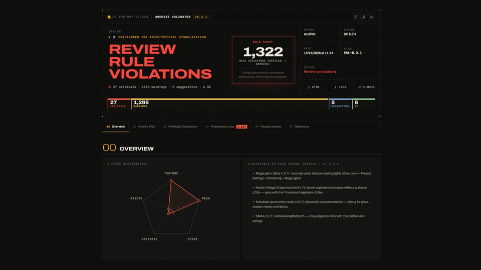
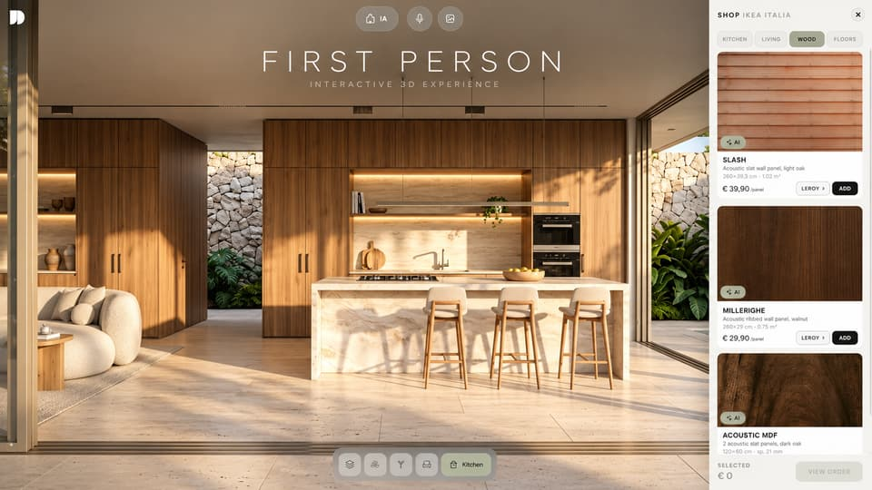

Real-time capture
Yacht Configurator
Hull, deck and sail finishes, camera hotspots and time of day, on desktop and in VR.
- UE 5.7
- C++
- VR
- Download
Real-time cinematic Case study →
Juscelio Schmidt · Real-time 3D developer · Berlin
I design and build real-time products end to end in C++, Blueprints and Python, then render them to a photoreal finish. 10+ years in 3D, open to roles in Europe and the UK.
Configurators built in Unreal Engine, each with a project or build to download.
Hull, deck and sail finishes, camera hotspots and time of day, on desktop and in VR.
Orbit the car, open every door, sit inside and swap paint and upholstery live.
Furnish an empty room from a 33-item catalogue, then swap every finish live.
A business-jet configurator, from the apron to the cabin. Look-development renders so far.
 Tool
Tool
Turns the viewport into a photoreal 4K render, true to the geometry.
Workflow →
Tool Web 3D
Web 3D

Web 3DWalk a residence in the browser and pick its finishes in a built-in shop.
Open live ↗The offline side: 3ds Max, Corona, Unreal and AI.
Real-time 3D developer and Unreal Engine technical artist. I take a product from the first model to a shipped configurator: C++ and Blueprints, UI, lighting, look development and the profiling that keeps it at frame rate.